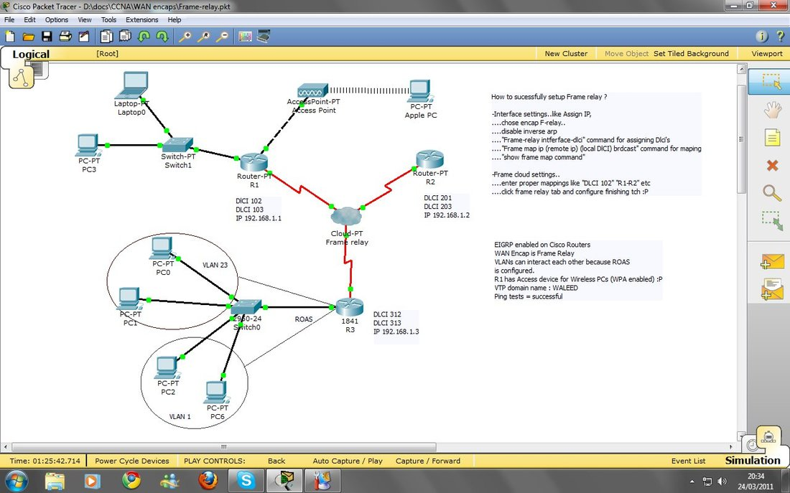

09 / PERSONAL PROJECT
CCNA Frame-relay Network
A personal networking project modelling a Frame Relay network in Cisco Packet Tracer.

PROJECT OVERVIEW
The idea and implementation.
The project topology connects three routers through a Frame Relay cloud and includes wired and wireless endpoints. The saved diagram also documents VLANs, router-on-a-stick inter-VLAN routing, and EIGRP.
The topology and configuration notes are preserved in the project image below.